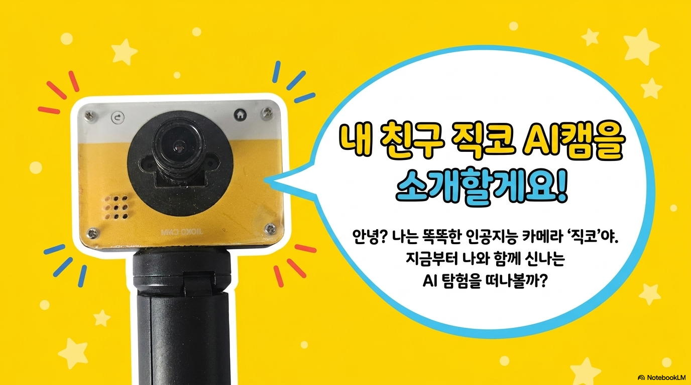
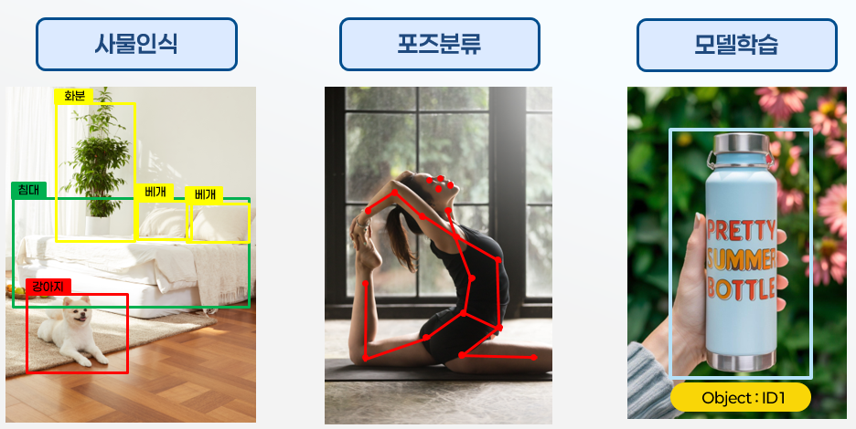
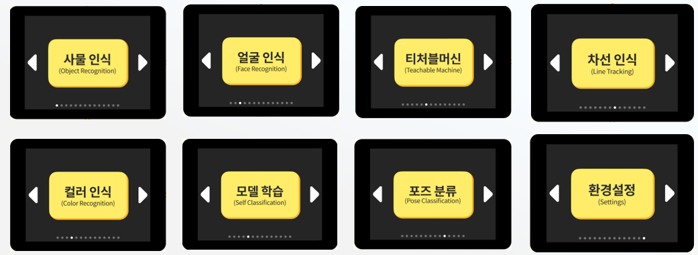
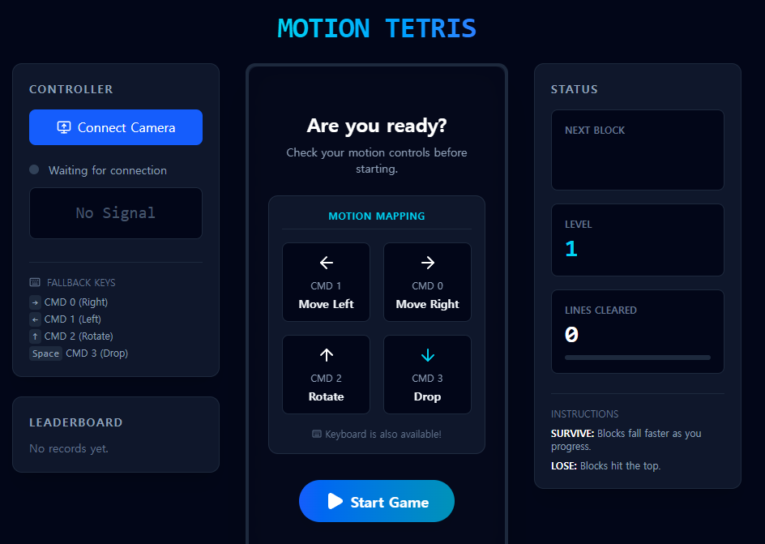
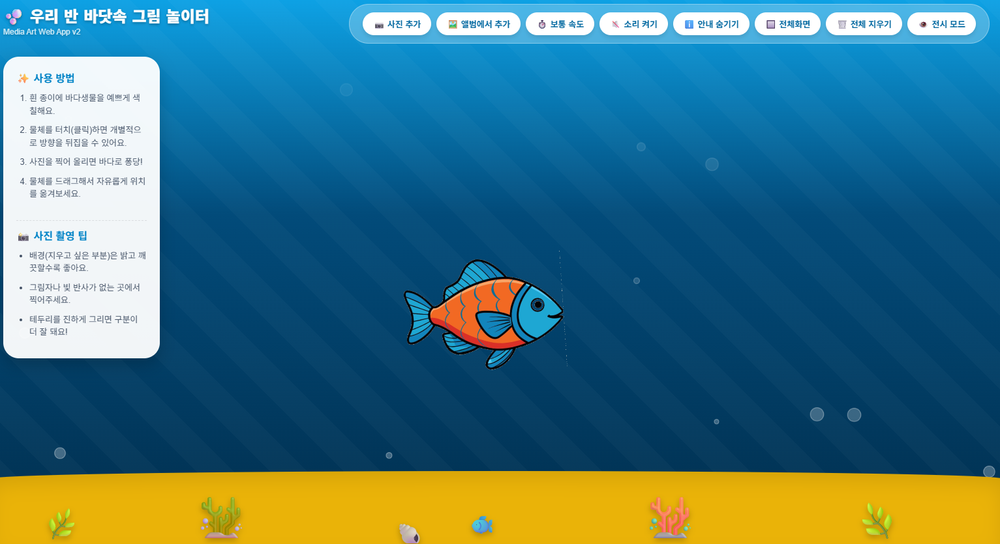

핵심 목표
온디바이스 AI의 원리를 이해하고 이를 JICKO AI캠으로 직접 경험해 본 후 Google AI Studio에서 포즈 추정을 이용한 간단한 게임을 만들어봅니다.
온디바이스 AI의 원리를 이해하고, JICKO AI캠과 Google AI Studio를 활용해 간단한 웹 게임을 만들어봅니다.
온디바이스 AI의 원리를 이해하고 이를 JICKO AI캠으로 직접 경험해 본 후 Google AI Studio에서 포즈 추정을 이용한 간단한 게임을 만들어봅니다.
AI캠과 바이브코딩을 처음 접하는 교사를 대상으로 합니다. 코딩 경험이 없어도 자연어 프롬프트로 결과물을 만들어봅니다.
AI 스튜디오에서 생성한 간단한 웹 게임
AI의 기본 개념과 데이터·모델의 관계를 살펴보고, 클라우드 AI와 온디바이스 AI의 차이를 이해합니다.

JICKO AI캠의 구조와 기능을 살펴보고, 포즈 추정 결과가 화면에 표현되는 과정을 직접 경험해봅니다.


Google AI Studio에 프롬프트를 입력해 포즈 추정을 활용한 간단한 웹 게임을 만들고 실행해봅니다.

온디바이스 AI와 웹 시리얼 통신을 이해하고, AI캠의 포즈 추정 결과를 활용한 웹 게임을 만들어봅니다.
1. 온디바이스 AI의 원리를 이해하고 이를 JICKO AI캠으로 직접 경험해봅니다.
2. Web Serial API를 이용해 웹 게임을 만들어봅니다.
3. AI캠의 포즈 추정을 이용한 간단한 게임을 만들어봅니다.
온디바이스 AI 이해 → JICKO AI캠 체험 → Web Serial API 실습 → 웹 게임 제작 → 포즈 추정 연동 → 공유와 회고의 순서로 진행합니다.
Web Serial API를 활용한 웹 게임과 AI캠의 포즈 추정을 활용한 간단한 웹 게임을 완성합니다.
AI의 기본 개념과 데이터·모델의 관계를 살펴보고, 클라우드 AI와 온디바이스 AI의 차이를 이해합니다.
AI캠의 구성과 동작 방식을 확인하고, 사물 인식과 포즈 추정, 모델 학습 기능을 직접 살펴봅니다.
Google AI Studio에 프롬프트를 입력해 학생의 그림이 바닷속을 움직이는 인터랙티브 웹앱을 만들고 실행해봅니다.

Web Serial API로 AI캠의 신호를 브라우저에 연결하고, 움직임으로 조작하는 모션 테트리스 게임을 만들어봅니다.
게임의 주제와 규칙을 기획하고, AI캠의 포즈 추정 결과를 이동·선택·점프 등의 게임 동작에 연결해봅니다.
게임의 오류와 난이도를 점검하고, 완성한 결과물을 공유하며 교과 수업에 적용할 방법을 함께 정리합니다.
폴더에 저장된 TXT 파일의 내용을 수정하지 않고 그대로 제공합니다. 원하는 프롬프트를 열어 복사한 뒤 AI Studio에 붙여 넣으면 됩니다.
일반 바이브코딩 프롬프트 · TXT 원문
"인터랙티브 미디어 아트Web App: 우리 반 바닷속 그림 놀이터" 1. 앱 개요 및 컨셉 목표: 아이들이 직접 그린 그림을 카메라로 찍거나 앨범에서 올리면, 그림의 배경이 자동으로 지워지고 화면(바다) 속을 헤엄치는 인터랙티브 미디어 아트 웹앱을 만듭니다. 사용 기술: HTML, CSS, 바닐라 JavaScript (별도의 외부 프레임워크나 라이브러리 사용 금지, 단일 index.html 파일로 구성). 테마: 깊이감이 느껴지는 바다 (상단은 밝은 파랑, 하단은 짙은 네이비). 해저면 그래픽과 뽀글거리는 공기방울 애니메이션을 CSS와 Canvas를 이용해 표현합니다. 2. 이미지 업로드 및 배경 제거 (핵심 로직) 입력: <input type="file" capture="environment"> (카메라 직접 촬영) 및 일반 앨범 선택 버튼 지원. 여러 장 동시 업로드 가능. 최적화: 너무 큰 해상도의 사진이 들어오면 가로세로 최대 1200px 기준으로 리사이징합니다. 배경 자동 투명화(누끼 따기): Canvas getImageData를 활용해 픽셀 데이터를 분석합니다. 모서리 픽셀의 평균 밝기를 계산하여, 사진의 배경이 "밝은 배경(예: 흰 도화지)"인지 "어두운 배경(예: 그림자 진 곳)"인지 분석한 후, 각 상황에 맞는 임계값(Luminance, Saturation)을 적용하여 배경 픽셀의 Alpha 값을 0으로 지웁니다. 안전장치(Failsafe): 만약 지워진 픽셀 수가 전체의 95% 이상이라면(그림이 통째로 날아간 경우), 배경 제거 알고리즘을 취소하고 원본 이미지를 그대로 띄웁니다. 오토 크롭(Auto-crop): 투명화가 완료된 후, 사물이 존재하는 영역들만 계산해 최소한의 Bounding Box 크기로 이미지를 잘라내서(Crop) 저장합니다. 이를 통해 정확한 터치 영역(Hitbox)을 확보합니다. 추가 시, 사용 중인 디스플레이 크기(화면 너비/높이)에 비례해서 알맞은 크기로 조절되어 화면 중앙 쪽에 스폰되도록 합니다. 3. 물리 및 애니메이션 엔진 자유 유영: 물고기(객체)들은 자동으로 약간의 속도(X축)와 부력(Y축, Sine 함수 활용)을 가지며 유영합니다. 화면의 좌우 벽에 닿으면 방향을 반대로 틀어서(Bounce) 이동합니다. 객체 렌더링: requestAnimationFrame을 이용하며, 물고기가 이동하는 방향에 맞춰서 이미지가 좌우 반전(Flip) 시각화가 되어야 합니다. 또한, 상하 이동에 맞춰 약간의 각도 변화(Rotation Wobble)가 반영됩니다. 4. 상호작용 (인터랙션) 마우스 및 터치 완벽 지원: mousedown/touchstart, mousemove/touchmove, mouseup/touchend을 모두 지원합니다. 드래그 앤 드롭: 객체(생물)를 손가락(마우스)으로 꾹 누른 채로 움직이면 자유롭게 위치를 옮길 수 있습니다. 개별 클릭/터치 좌우 반전: 움직이는 물고기를 드래그하지 않고 **가볍게 한 번 탭(클릭)**할 때마다, 해당 물고기만 단독으로 좌우가 반전(Flip)되도록 구현합니다. (이동 방향과 무관하게 사용자가 지정한 방향성을 기억했다가 렌더링 시 반영) 시각/청각 피드백: 물고기를 터치하거나 드래그할 때 시각적 파티클 스파크(Spark) 효과가 터지며, 물방울 소리(Web Audio API의 Oscillator 활용)가 재생되도록 합니다. (단, 소리는 기본적으로 Mute 상태이며, 사용자가 '소리 켜기' 누른 이후 작동) 5. UI 및 컨트롤 (반응형) 반응형 툴바: 모바일(화면 너비 768px 이하)에서는 툴바가 화면 하단에 플로팅 상태로 배치되어 한 손 조작이 편하게 하고, 데스크탑에서는 상단에 가로로 넓게 배치합니다. (배경에는 불투명 블러 backdrop-filter 적용). 버튼 구성: 그림 그리기 (카메라 아이콘) 사진 선택 (앨범 아이콘) 속도 조절 (보통/빠름/느림 토글) 소리 토글 (스피커 켜기/끄기) 안내 숨기기/보기 전체 화면 (Fullscreen API) 모두 지우기 📺 전시 모드 (버튼을 누르면 전시를 위해 모든 UI가 화면에서 은은하게 사라짐. 화면 더블 클릭 시 다시 UI 표시) 사용 설명서(안내 카드): 중앙에 튜토리얼 스텝이 적힌 말풍선 카드가 둡니다. (마우스를 올리거나 스크롤 시 방해되지 않도록 처리하며, 버튼으로 접어둘 수 있습니다.)
일반 바이브코딩 프롬프트 · TXT 원문
🚀 구글 AI 스튜디오용 헥사 게임 개발 프롬프트 [역할 및 목표] 당신은 고전 퍼즐 게임과 현대적인 매칭 게임 개발에 전문성을 갖춘 수석 게임 디자이너이자 소프트웨어 아키텍트입니다. 사용자의 요청에 따라, 고전 게임 '헥사(Hexa/Columns)'를 현대적인 교육용/재미용 게임으로 재해석한 **상세 게임 디자인 문서(GDD)**와 이를 구현하기 위한 **핵심 알고리즘 코드(파이썬/Pygame 예시)**를 작성해야 합니다. [게임 개요] 게임 제목: 과일 헥사 (Fruit Hexa Dash) 장르: 떨어지는 블록 매칭 퍼즐 플랫폼: PC (웹 브라우저 또는 데스크톱 앱) 그래픽 스타일: 레트로 픽셀 아트 (Retro Pixel Art) 핵심 가치: 빠른 판단력, 패턴 인식, 배열 및 탐색 알고리즘 교육 [1. 게임 모드] 게임을 시작할 때 플레이어는 다음 두 가지 모드 중 하나를 선택할 수 있어야 합니다. 1인용 모드 (Single Player): 혼자서 높은 점수와 레벨에 도전하는 무한 모드. 2인용 모드 (2-Player Versus): 두 명이 한 화면(또는 네트워크)에서 실력을 겨루는 대전 모드. [2. 핵심 매커니즘 및 규칙] 전형적인 헥사의 규칙을 정확히 따릅니다. 블록 구성: 항상 3개의 과일 픽셀 이미지가 세로 한 줄로 붙어서 내려옵니다. 블록 조작: 좌/우 이동: 블록을 왼쪽이나 오른쪽으로 한 칸씩 이동. 하강 가속 (Soft Drop): 아래 방향키를 누르면 블록이 빠르게 내려옴. 순환 회전 (Cycle Rotation): '회전' 버튼을 누르면 블록 내의 과일 3개의 순서가 상-중-하에서 하-상-중으로 순환하며 바뀝니다. (도형 모양은 변하지 않음) 과일 종류 (6종, 픽셀 이미지): 🔴 빨강 체리 (Red Cherry) 🟠 주황 오렌지 (Orange Orange) 🟡 노랑 레몬 (Yellow Lemon) 🟢 초록 라임 (Green Lime) 🔵 파랑 블루베리 (Blue Blueberry) 🟣 보라 포도 (Purple Grape) 블록 제거 조건: 같은 과일 이미지가 가로, 세로, 대각선 방향으로 3개 이상 일렬로 연결되면 제거됩니다. 연쇄 반응 (Chain Reaction/Combo): 제거된 과일 위의 과일들이 아래로 떨어지고, 그 과정에서 또다시 3개 이상의 매칭이 일어나면 연쇄적으로 제거되며 추가 점수를 얻습니다. [3. 점수 및 레벨링 시스템] 레벨: 게임은 Level 1에서 시작합니다. 블록 하강 속도: 레벨이 올라갈수록 블록이 떨어지는 기본 속도 상수가 점진적으로 증가합니다. 레벨 업 조건: 플레이어가 특정 점수를 달성할 때마다 레벨이 상승합니다. 예시: 매 1,000점마다 레벨 1 상승. 또는 [1,000, 2,500, 4,500, 7,000 ...]과 같은 구간 점수 시스템. (가장 효율적인 레벨 업 구간과 속도 증가 폭을 제안해 주세요.) [4. UI/UX 및 그래픽 구성] 모든 그래픽은 따뜻하고 귀여운 레트로 픽셀 아트 스타일이어야 합니다. 시작 화면: 게임 제목, 모드 선택 버튼 (1인용/2인용), High Score 표시. 게임 화면 (1인용): 게임 보드 (세로로 긴 직사각형 배열) 다음 블록 (Next Block) 표시 창 점수 (Score) 표시 레벨 (Level) 표시 과일 픽셀 이미지 6종 게임 화면 (2인용 대전): 두 개의 독립적인 게임 보드가 양쪽에 배치됩니다. 각 보드 옆에 개별 점수와 레벨이 표시됩니다. 대전 모드 전용 룰: 특정 콤보 이상을 달성하거나 많은 수의 과일을 한 번에 제거할 때, 상대방의 보드 맨 아래에 제거할 수 없는 **'방해 블록(예: 돌 블록)'**을 한 줄 추가하여 방해합니다. [5. 결과 요청 내용] 위의 상세 설계를 바탕으로 다음 내용을 생성해 주세요. 상세 구현 로직 설명: 2차원 배열 내에서 가로, 세로, 대각선 매칭을 체크하는 탐색 알고리즘을 의사코드(Pseudocode) 또는 상세한 단계별 설명으로 작성해 주세요. (SW 교육용으로 활용할 수 있도록 명확하게) 프로토타입 예제 코드: 파이썬(Python)과 Pygame 라이브러리를 사용하여 위 게임의 **핵심 기능(1인용 모드, 6종 과일 배열 조작, 제거 로직, 레벨에 따른 속도 변화)**이 작동하는 프로토타입 코드를 작성해 주세요. (이미지 파일은 코드로 대체하거나 주석으로 처리 가능) 대전 모드 구현 제안: 2인용 대전 모드에서 방해 블록 시스템을 구현하기 위한 추가적인 로직과 콤보 점수 계산 방식을 제안해 주세요.
노트북 웹캠을 사용하는 바이브코딩 프롬프트 · TXT 원문
웹캠을 이용해 허공에서 드럼을 칠 수 있는 '핸드트래킹 에어 드럼 패드(Air Drum Pad)' 웹 애플리케이션을 React 파일 하나(App.tsx)로 만들어주세요. [기술 스택] - React (Hooks: useState, useEffect, useRef) - Tailwind CSS - framer-motion (motion/react 활용한 애니메이션) - Web Audio API (순수 코드로 사운드 합성) - @mediapipe/tasks-vision (손가락 트래킹) [세부 구현 요구사항] 1. 초기 화면 (권한 획득) - 브라우저의 오디오 및 비디오 자동재생 보안 정책을 우회하기 위해, 첫 화면에는 "Allow Camera & Start" 버튼이 있어야 합니다. 클릭 시 오디오 컨텍스트를 초기화하고 웹캠 권한을 요청합니다. 2. UI 및 디자인 (다크 테마) - 배경은 아주 어두운 색(bg-zinc-950)으로 처리하고, 바탕에 웹캠 영상이 반투명하게, 거울처럼 좌우 반전되어 꽉 차게 나타나야 합니다. - 화면 중앙에 4개의 드럼 패드(Kick, Snare, Hi-Hat, Cymbal)를 Grid(2x2)로 배치합니다. - 패드는 너무 크지 않게 적당한 정사각형(aspect-square, max-w-2xl 컨테이너 사용) 크기여야 합니다. - 패드별 테마 컬러(rose, blue, amber, emerald)를 적용하고 투명도를 주어 유리처럼(backdrop-blur) 예쁘게 렌더링하세요. 3. 드럼 사운드 합성 (Web Audio API) - 외부 사운드 에셋을 사용하지 마세요. - Oscillator, GainNode, BiquadFilter, 하얀 소음(White noise) 버퍼 등을 조합하여 Kick, Snare, Hi-Hat, Cymbal 소리를 리얼하게 합성하는 4개의 함수를 각각 작성하세요. 4. 핸드 트래킹 및 타격 판정 (핵심) - MediaPipe HandLandmarker 모델을 로드하여 양손의 '검지(Index, 8번)'와 '중지(Middle, 12번)' 손가락 끝 위치를 실시간으로 추적하세요. - 손가락 끝의 위치는 <canvas>를 덧씌워 하얀색 원으로 표시해 주어 시각적 피드백을 제공하세요. - 각 손가락 끝 좌표(X, Y)가 패드 UI의 `getBoundingClientRect()` 영역 안으로 들어올 때 타격으로 인정하고 소리를 냅니다. 5. 다중 손가락 연타 로직 (매우 중요) - 한 패드를 연속해서 빠르게 칠 수 있어야 합니다. - 단순히 '눌림' 상태만 체크하지 말고, 각 손가락별로 어느 패드 위에 있는지 개별적으로 상태를 추적(Map 등 활용)하세요. - A 손가락이 패드 안에 머무르는 중이라도, B 손가락이 패드 영역에 진입하면 즉시 소리가 나야 합니다. - 손가락이 패드를 살짝 벗어났다가 다시 들어올 때 부드럽게 연타가 되도록 타격 쿨다운은 50ms 정도로 아주 짧게 설정하세요. - 패드를 타격할 때 프레이머 모션(motion.button)을 이용해 버튼이 살짝 작아지고(scale 0.95), 밝아지며(brightness), 주위로 글로우(box-shadow)가 퍼지는 이펙트를 넣어주세요.
노트북 웹캠을 사용하는 바이브코딩 프롬프트 · TXT 원문
React와 Tailwind CSS를 사용하여 웹캠 기반의 '에어 캔버스(Air Canvas)' 애플리케이션을 만들어주세요. MediaPipe의 기계 학습 모델을 사용해 손 제스처를 인식하고, 허공에 그림을 그릴 수 있는 앱입니다. 다음의 세부 구현 사항과 최적화 규칙을 반드시 지켜주세요. [1. 핵심 기능 및 제스처 맵핑] MediaPipe의 `GestureRecognizer`와 `@mediapipe/tasks-vision` 라이브러리를 사용합니다. 손은 1개만 인식하도록(numHands: 1) 설정합니다. - 검지손가락 펴기 (Pointing_Up): '그리기 모드'. 검지손가락 끝(landmarks[8])의 좌표를 추적하여 화면에 선을 그립니다. - 손바닥 펴기 (Open_Palm): '색상 변경 모드'. 그리기가 중단되며, 화면에 떠 있는 가상 커서를 움직여 UI의 색상 팔레트 버튼 위를 가리키면 해당 색상으로 브러시 색상이 변경됩니다. 지우개 버튼을 가리키면 캔버스의 모든 선을 지웁니다. - 주먹 쥐기 (Closed_Fist): '그리기 멈춤'. 즉시 선 긋기를 중단하고 자동 모드를 해제하여 선이 이어지지 않도록 끊어줍니다. [2. 렌더링 및 카메라 설정] - 좌우 반전: 거울을 보는 것처럼 편하게 그릴 수 있도록 카메라 화면과 캔버스 좌표를 좌우 반전(scale(-1, 1)) 처리해야 합니다. - 어두운 배경 처리: 카메라 영상 위에 `rgba(0, 0, 0, 0.97)` 수준의 매우 어두운 반투명 오버레이를 덮어서 사람이나 뒷배경은 거의 안 보이고 그려진 선과 UI만 선명하게 보이도록 만들어주세요. 형광색 계열의 선(빨강, 노랑, 초록, 파랑, 보라 등)이 눈에 띄게 해주세요. [3. 부드러운 선 그리기 (보간 및 디바운스 최적화)] 선을 그릴 때 좌표가 갑자기 튀거나 선이 뚝뚝 끊기는 현상을 방지하기 위해 다음 알고리즘을 캔버스 렌더 루프에 적용해 주세요: - 선형 보간 (Linear Interpolation, Lerp): 이전 좌표와 현재 좌표 사이를 부드럽게 이어주도록 0.4 정도의 보간(smoothing) 비율을 적용합니다. - 스냅 방지: 이전 좌표와 새 좌표 간의 거리가 너무 멀면(예: dist > 150) 보간하지 않고 새 좌표로 즉시 이동시켜 화면을 가로지르는 이상한 선이 생기는 것을 막습니다. - 제스처 디바운스: 손가락을 펴고 그리는 도중 AI 인식이 순간적으로 끊기더라도, 약 600ms 이내에 다시 인식되면 선이 끊어지지 않고 이어지도록 디바운스 타이머 로직을 반영해 주세요. 단, '주먹 쥐기(Closed_Fist)'가 명확히 인식되면 바로 선을 끊습니다. [4. UI 및 디자인 요구사항] - 텍스트와 UI 언어는 모두 '한글'로 작성해주세요. - 상단에 '에어 캔버스' 제목표시와 함께 현재 AI 상태(모델 불러오는 중, 카메라 활성화 등)를 나타내는 상태바를 둡니다. - 상단 우측에는 색상 변경 버튼들(빨강, 주황, 노랑, 초록, 파랑, 보라, 전체 지우기)을 배치하고, 각각의 버튼을 손가락(가상 커서)으로 가리켰을 때 선택되도록 충돌 처리(BoundingClientRect 활용)를 구현합니다. 색상이 선택되면 해당 버튼이 커지며 하이라이트 효과가 나야 합니다. - 하단에는 현재 인식 중인 제스처 모드를 Lucide-react 아이콘(그리기 모드, 색상 변경, 그리기 멈춤)과 함께 표시해주는 상태 HUD 창을 만드세요. [5. 기술적 규칙] - React의 상태(useState) 변경으로 인한 렌더링 지연이 캔버스 드로잉 프레임을 깎아먹지 않도록, 캔버스 렌더 루프(requestAnimationFrame) 내부에서 사용하는 좌표, 현재 선(stroke), 색상 등의 데이터는 `useRef`를 사용하여 관리해 주세요.
AI캠과 연결해 사용하는 바이브코딩 프롬프트 · TXT 원문
React와 TypeScript, Tailwind CSS, Vite를 사용하여 '시리얼 통신 기반 테트리스 게임'을 만들어주세요. 일반적인 키보드 조작뿐만 아니라, 아두이노(또는 포즈 추정 장치)로부터 Web Serial API를 통해 데이터를 받아 게임을 조작하는 것이 핵심입니다.
다음 세부 요구사항을 반드시 지켜서 구현해주세요.
[1] Web Serial API 연동 (핵심)
- `useSerial` 커스텀 훅을 만들어 아두이노와의 Web Serial 연결 상태(연결/해제, 에러)와 데이터 읽기 루프를 관리하세요.
- Baud Rate는 115200으로 설정합니다.
- 아두이노(포즈 추정 장치)는 0, 1, 2, 3의 숫자 데이터를 ASCII 형태('0'-'3') 또는 원시 바이트(0-3)로 지속적으로 전송합니다. 이를 파싱하여 다음 동작으로 매핑하세요.
* 0: 플레이어 오른쪽 이동 (Move Right)
* 1: 플레이어 왼쪽 이동 (Move Left)
* 2: 블록 회전 (Rotate)
* 3: 소프트 드롭 (Soft Drop - 누르고 있는 동안 빠르게 내려가기)
- [중요] 예외 처리: 케이블 연결이 물리적으로 끊기거나 장치가 해제될 때 발생하는 "The device has been lost" 에러를 완벽하게 핸들링해야 합니다. try-catch 문을 사용해 `reader.cancel()`, `port.close()`, `reader.releaseLock()` 과정에서 발생하는 unhandled promise rejection을 무시하고, 브라우저가 크래시되지 않도록 "Device disconnected. Please reconnect."라는 UI 에러 문자열만 띄운 뒤 상태를 초기화하도록 방어 코드를 작성하세요.
[2] 테트리스 게임 로직
- 10x20 크기의 표준 테트리스 보드를 구현하세요.
- I, J, L, O, S, T, Z 모양의 테트로미노와 각각의 색상 매핑을 구현하세요.
- 블록 충돌 처리, 라인 클리어 로직, 하드 드롭(Hard Drop), 소프트 드롭, 회전 로직을 구현하세요.
- 키보드 폴백(Fallback) 조작을 지원하세요. (방향키: 좌우 이동 및 회전, 아래 방향키: 소프트 드롭, 스페이스바: 하드 드롭)
[3] 게임 밸런스 및 난이도 조절
- 1레벨 낙하 속도는 약 1.5초(1500ms)로 여유롭게 설정하고, 레벨이 오를 때마다 낙하 속도를 자연스럽게 가속하세요. (아두이노 포즈 추정의 딜레이를 고려한 여유로운 속도)
- 10줄을 지울 때마다 레벨업을 하며, 최고 레벨은 5입니다.
- 레벨 2부터는 아래쪽에 쓰레기 블록(Garbage lines)이 랜덤으로 생성된 채로 시작되게 하여 난이도를 높여주세요.
[4] Canvas 렌더링 및 UI
- HTML5 Canvas를 사용하여 게임 보드를 렌더링하세요.
- 그리드의 배경색(예: 옅은 회색 선)과 테트로미노 블록을 깔끔하게 분리해서 그리세요. 블록이 내려지나갈 때 캔버스의 `ctx.strokeStyle`이 오염되어 배경 그리드 선이 블록 윤곽선으로 변하는 렌더링 버그가 없도록 매 셀을 그릴 때 윤곽선 색상을 명시적으로 초기화(Reset)하세요.
- 화면 우측(또는 좌측)에는 현재 점수, 레벨, 클리어한 라인 수, 그리고 [USB 장치 연결] 버튼과 연결 시그널 상태를 보여주는 대시보드 패널을 배치하세요.
[5] 배경 음악 (Web Audio API)
- Web Audio API (OscillatorNode, GainNode)를 사용하여 외부 애셋(mp3 등) 없이 코드로만 자체 8-bit 스타일 배경음악을 구현하세요.
- 단조가 아닌 '밝고 경쾌하고 통통 튀는 C Major(다장조)'의 16마디 루프 멜로디와 디스코 스타일 베이스라인을 작곡해서 재생하게 하세요. 템포는 165 BPM 정도로 신나게 만드세요.
- 볼륨 조절 및 음소거 기능을 포함하세요.
AI캠과 연결해 사용하는 바이브코딩 프롬프트 · TXT 원문
넌 이제부터 천재 프론트엔드 개발자이자 UI/UX 디자이너야. 아래의 요구사항을 완벽하게 충족하는 "AI 포즈 머지(AI Pose Merge)" 라는 이름의 2048 기반 웹 게임을 만들어줘. React, Tailwind CSS, Framer Motion을 사용하여 단일 파일(Standalone HTML) 또는 깔끔한 컴포넌트 형태로 코드를 작성해야 해. 한국어를 지원해야 해. # 1. 게임 핵심 로직 (2048 규칙 기반 변형) - **기본 판**: 4x4 그리드 기반. - **블록 생성**: 빈 공간에 블록이 랜덤 생성됨. 기본 규칙은 2048과 동일(같은 숫자가 만나면 합쳐져 2배가 됨). - **레벨 시스템**: 역대 완성한 최고 숫자 블록에 따라 레벨이 변화함 (`Level = Math.max(1, Math.floor(Math.log2(최고숫자) - 5)`). - **블록 확률 난이도**: - Level 1~2: 숫자 '2'만 생성. - Level 3~7: 레벨에 따라 '4'가 나올 확률이 5%씩 증가. - Level 8 이상: 무조건 '4'(80%), '8'(20%) 블록만 생성. - **타임어택 모드**: 레벨 5부터 3분(180초)의 타이머가 시작됨. 새로운 최고 기록 레벨에 도달할 때마다 15초씩 시간이 추가됨. 시간이 0이 되면 게임 오버. - **게임 종료 조건**: 8192 블록을 만들면 "승리", 블록이 꽉 차서 더 이상 움직일 수 없거나 타임어택 시간이 0이 되면 "게임 오버". # 2. Web Serial API 및 입력 컨트롤 (AI 카메라 제어) 이 게임은 방향키로도 조작 가능하지만, Web Serial API를 활용해 외부 기기(AI 카메라/아두이노)에서 들어오는 시리얼 신호로 조작 가능해야 해. - **보드레이트(Baud Rate)**: 115200 - **시리얼 신호 매핑**: - 문자 '0' 수신 시 -> 오른쪽 이동 (포즈: 오른팔 들기) - 문자 '1' 수신 시 -> 왼쪽 이동 (포즈: 왼팔 들기) - 문자 '2' 수신 시 -> 아래로 이동 (포즈: 허리에 손) - 문자 '3' 수신 시 -> 위로 이동 (포즈: 만세/양팔 들기) - 브라우저 호환성이 없을 시 예외 처리 경고창(alert)을 띄워야 해. # 3. UI/UX 디자인 시스템 (Frosted Glass & Cyberpunk) - **배경**: #0a0b1e 베이스 컬러에, 보라색(#4c1d95)과 남색(#1e2a78)이 혼합된 방사형 그라데이션 메쉬(Radial Gradient Mesh)를 전체 배경으로 고정. - **테마 (Glassmorphism)**: UI 컨테이너들은 반투명 배경(bg-white/5), 블러 효과(backdrop-blur-[12px]), 얇은 흰색 테두리(border-white/10), 이너 섀도우를 사용하여 유리 질감을 낼 것. - **포인트 컬러**: 타이틀과 강조 텍스트, 타이머 바에는 네온 스카이블루(#00f2ff) 및 그라데이션 사용. - **블록 디자인**: 2, 4, 8, 16... 숫자가 커질수록 노란색 계열에서 주황/골드로 색상이 변화하며, 128 이상부터는 텍스트 색상을 흰색으로 하고 타일 주변에 빛이 나는 Glow 효과(drop-shadow)를 추가할 것. 블록이 합쳐질 때 Framer Motion의 spring 효과를 이용해 1.15배 커졌다가 돌아오는 팝핑(Popping) 애니메이션 적용. - **이모지 아이콘**: 가이드 영역에서 사용하는 사람 이모지 중 '오른팔 들기'는 CSS로 `scale-x-[-1]`을 적용해 확실히 오른팔을 든 것처럼 표현하고, 양팔 들기 포즈는 '🙌' 아이콘을 사용할 것. # 4. 화면 레이아웃 (데스크톱 기준 3-Column 구조) 반응형을 지원하며, 넓은 데스크톱 화면(lg 이상)에서는 3단으로 나열되게 만들어줘. 1. **[화면 1: 인트로 화면]** - 처음 접속 시 나타나는 메인화면. 타이틀, 게임 설명, 4가지 포즈 조작 가이드, [AI 카메라 연결하기] 버튼, [게임 시작하기] 버튼 위치. 2. **[화면 2: 게임 플레이 화면 - 좌측 영역]** - 헤더(타이틀, 레벨, 타임어택 안내). - "레벨"과 "점수"를 보여주는 통계 카드. - 타임어택 타이머 바 (진척도가 애니메이션으로 차오르는 바 형태, 시간이 10초 이하 남으면 붉게 깜빡임 또는 맥박 치는 듯한 펄스 애니메이션). - "다시 시작" 버튼. 3. **[화면 3: 게임 플레이 화면 - 중앙 영역]** - 4x4 게임 보드와 블록. (화면 중앙에서 가장 눈에 띄게) - 승리 또는 게임 오버 시 이 보드 영역 위에 오버레이로 축하/종료 메시지와 파티클 효과(승리 시 축포 애니메이션) 띄우기. 4. **[화면 4: 게임 플레이 화면 - 우측 영역]** - "AI 카메라 동작 중" 피드백 UI (또는 연결 창 버튼). 작동 중에는 핑(Ping) 인디케이터 깜빡임 처리. - 우측 하단에 포즈 매뉴얼 가이드 (이모지와 동작 매핑 텍스트).
게임을 만들기 전에 주제, 목표, 조작 방법과 규칙을 먼저 정리합니다. 대화형 Agent를 사용하거나 기획서를 내려받아 직접 작성할 수 있습니다.
어떤 수업에 사용할지, 플레이어가 무엇을 달성하면 성공하는지 정합니다.
AI캠이 인식하는 포즈나 신호를 이동, 선택, 점프 등의 동작에 연결합니다.
점수, 제한 시간, 난이도, 성공과 실패 조건을 정리합니다.
질문에 하나씩 답하면서 게임 아이디어를 구체화하고, AI Studio에 넣을 제작 프롬프트까지 완성합니다.
게임의 핵심 요소를 차분히 생각하면서 활동지에 직접 기록하고 모둠원과 함께 아이디어를 정리합니다.
AI 리터러시 수업에 활용할 수 있는 차시별 자료와 AI 카메라 카탈로그를 내려받을 수 있습니다.
Web Serial API는 Chrome 계열 브라우저에서 가장 안정적으로 동작합니다.
AI캠, 아두이노, PC 연결 순서를 확인하고 포트 선택 팝업에서 장치를 고릅니다.
AI캠 연결이 어려운 자리도 숫자키나 방향키로 게임을 먼저 테스트할 수 있게 합니다.